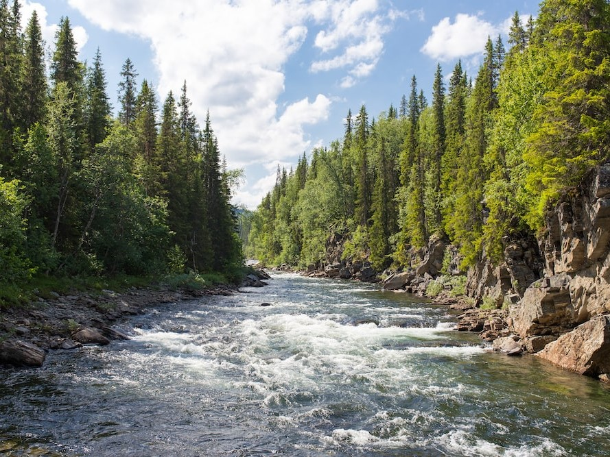
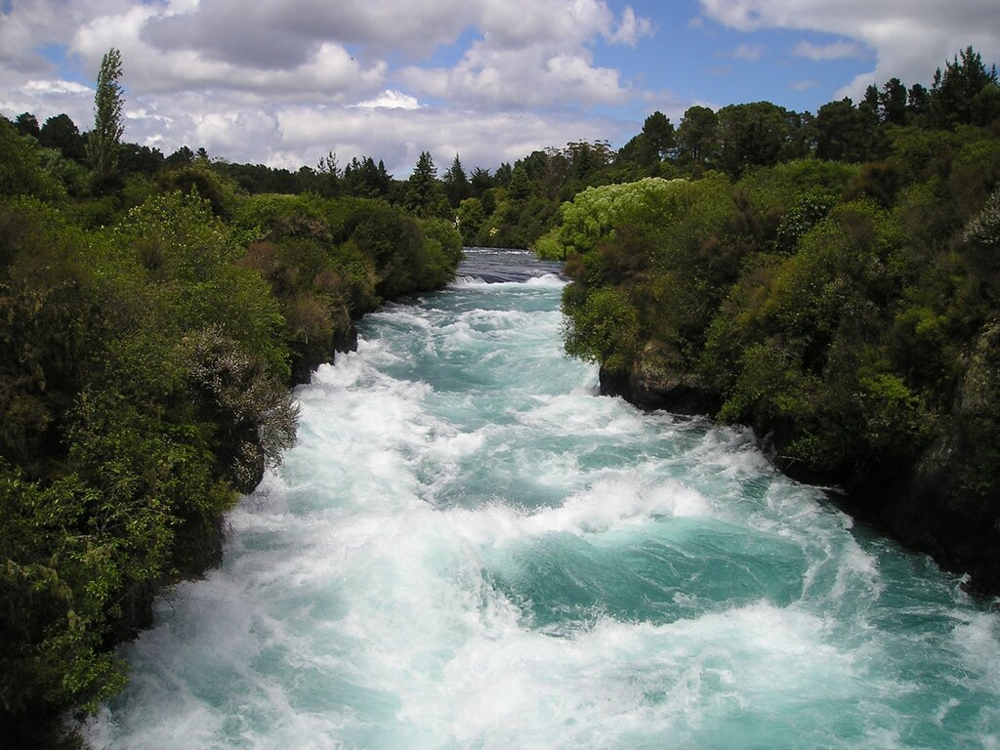

Class 1
Class 2
Class 3
FAQs
Which rivers are good for beginners for rafting?
For beginners, Class 1 is recommended. As shown in the first picture above, the gentle river is safe and good for rafting with the family.
What is the difference between a Class 1 and a Class 3 rapid?
Rapids are classified on a scale of 1-3, with Class 1 being the easiest and Class 3 being the most difficult. Class 1 rapids have small waves and few obstacles, while Class 3 rapids have large waves, strong currents, and numerous obstacles.
Can I bring my own raft for a guided trip?
Most guided trips provide their own rafts and equipment, but some companies allow participants to bring their own rafts with prior approval.
How do I know if a river is safe for rafting?
Check the river's water level, weather forecast, and any warnings or advisories issued by local authorities. Always follow the safety guidelines provided by your guide or company.